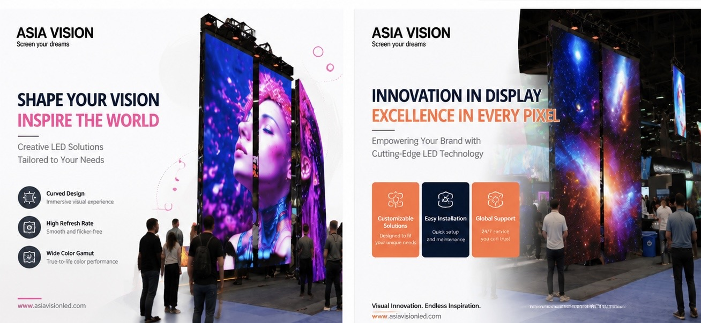
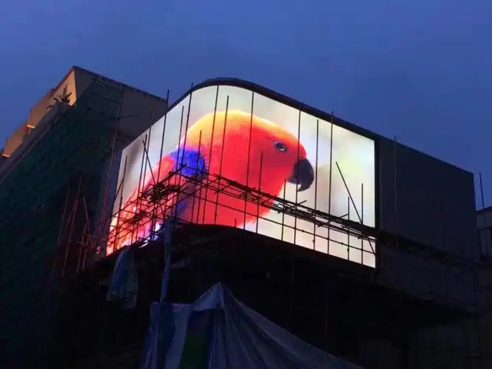

A naked-eye 3D outdoor LED display turns a building corner into a landmark. Unlike a conventional flat billboard, a 3D screen uses a right-angle or curved cabinet layout plus perspective-corrected content to project volume, depth, and motion into open air. Viewers see objects appear to leave the screen surface without wearing glasses.
The effect depends on three things working together: a large enough canvas, a pixel pitch fine enough for the viewing distance, and content authored for that specific geometry. Get any one wrong and the illusion collapses into an ordinary video wall. This guide covers the specification, structural, and content decisions buyers face when commissioning one.
Since 2019 the format has moved from novelty to expected feature for retail flagships, transit hubs, and entertainment districts. The screens draw crowds, and crowds draw tenants. That commercial logic is why the category keeps growing even where budgets are tight.
For a project team, the practical consequence is that a 3D screen is planned as a media asset rather than a building component. It has an audience profile, a content calendar, and a performance metric. That framing changes who sits at the design table: marketing, real estate, and the creative agency all have a stake before the first cabinet is specified.
It also changes the procurement sequence. On a flat billboard, the screen is often bought last, once the structure exists. On a 3D corner unit, the screen geometry constrains the structure, so the display decision has to be made early, ideally while the facade is still on paper. Teams that buy the screen late usually pay for it in structural rework and compromised viewing angles.
The illusion is a controlled perspective trick. Content is rendered with an anamorphic projection that assumes the viewer stands at a known angle and distance. When the physical screen folds at a 90-degree corner, the fold becomes the vanishing edge, and objects painted on both faces appear to wrap around it.
Cabinet geometry matters more than raw brightness. Many projects use an L-shaped configuration with two faces meeting at a sharp corner, but curved modules are also common for slimmer buildings. The screen must be rigid: any flex between cabinets breaks the seam and the eye immediately reads it as two separate displays.
Content is usually delivered at 2 to 4 times the native resolution and downscaled, because the anamorphic stretch exaggerates pixel errors. High refresh and high grayscale processing keep gradients smooth so that large dark areas do not band, which would otherwise destroy the depth cue.
Two smaller design choices shape the result more than buyers expect. First, the vertical viewing window: the sweet spot is usually a band roughly 1.5 to 2 meters tall at eye level, so the screen height and tilt should be set for pedestrians, not for the architect's render. Second, ambient contrast: a 3D object against a bright sky needs far more punch than the same object against a shaded wall, so brightness and content exposure are tuned together, not separately.
Finally, the effect is viewpoint-dependent by nature. As a viewer walks past, the illusion strengthens and then breaks. Designers place the strongest hero moments at the angles where most foot traffic pauses, such as a crossing, a store entrance, or a taxi rank.
Outdoor 3D screens are viewed from far away, so pixel pitch can be coarser than a retail indoor wall of the same size. The trade-off is that coarse pitch limits how small a 3D object can be before it turns into blocks.
As a rule, keep the smallest 3D object at least 40 pixels across at native resolution. If the object is 2 meters wide in the video, the screen needs roughly 80 pixels per 2 meters, which caps effective pitch at about P25 for a distant audience and pushes projects toward P10 or finer when pedestrians pass within 30 meters.
| Viewing Distance | Suggested Pitch | Typical Use | Notes |
|---|---|---|---|
| 5-15 m | P4 - P6 | Street-level retail facade | Pedestrians see detail; content must be simple |
| 15-40 m | P6 - P10 | Intersection corner, plaza | Sweet spot for 3D depth cues |
| 40-100 m | P10 - P16 | Highway-facing tower | Motion reads better than fine detail |
| 100 m+ | P16 - P25 | Landmark skyline screen | Bold shapes only; ignore fine text |
An outdoor 3D display is a building attachment, not a freestanding product. Wind load usually governs the steel design, especially on a corner where two faces catch pressure from different directions. A structural engineer should sign off on the frame, anchor points, and any penetrations into the facade.
Weather protection is non-negotiable. Cabinets should carry IP65 front and rear, with a sealed signal path and drainage for condensation. In coastal or high-humidity markets, specify conformal coating on driver boards and stainless fasteners.
Thermal design matters because a 3D screen often runs bright for long hours to stay visible against daylight. Passive airflow through rear plenums handles most climates, but enclosed facades need active cooling with temperature sensors and automatic brightness derating above a threshold.
Maintenance access is decided at design time and cannot be added cheaply later. Front-serviceable cabinets, where a module can be pulled from the face, suit screens mounted flush to a curtain wall. Rear-serviceable cabinets need a walkable plenum behind the screen, which consumes lettable floor area. On a corner unit that spans two elevations, plan at least one crane or lift access point for the power and control cabinets as well, because those are the parts most likely to need service.
A common oversight is spare capacity. The power distribution and data sending path should be sized for the content the client intends to run in three years, not the launch reel. Upgrading a sealed riser later costs far more than the marginal cost of a larger breaker and an extra fiber pair at build time.
Buyers routinely underestimate content cost. A 3D campaign requires custom rendering, not stock footage. Expect a specialist studio to model each hero object, set the camera to the installation's exact geometry, and test on site because ambient light changes the depth read.
Budget content as an ongoing line, not a one-off. Screens stay interesting only when the creative refreshes. Many operators schedule a new hero animation each quarter and rotate simpler 2D loops between launches. A media server with preset geometry profiles lets the operator swap content without re-calibrating the projection each time.
The technical brief you hand the studio should include the cabinet map, the exact corner angle, the viewer standing zones, and the ambient brightness range across the day. Without those numbers the studio works blind and the first render almost always misjudges scale. Studios that receive the brief up front typically deliver a usable hero animation in two to three iterations rather than six.
Keep a fallback loop ready. Screens occasionally run without fresh creative during a campaign gap, and an empty or mis-scaled slot damages the venue's image more than a simple branded animation would. A well-made 2D loop that respects the corner geometry is a cheap insurance policy.
| Cost Category | One-Time | Recurring | Notes |
|---|---|---|---|
| Screen hardware | Yes | - | Cabinets, power, control, structure |
| Structural works | Yes | - | Often exceeds screen cost on retrofit facades |
| Content - hero 3D | Yes | Quarterly | Custom anamorphic render per object |
| Media server and playback | Yes | Optional | Profiles simplify content swaps |
| Permits and engineering | Yes | - | Varies sharply by jurisdiction |
Asia Vision Technology builds outdoor LED displays rated IP65 with brightness above 8000 nits and holds CE, FCC, and RoHS certification for export markets. For 3D facade work we support the structural dialogue early, sharing cabinet dimensions and load data so the engineering team can lock the steel design before fabrication.
Our COB and SMD lines cover the pitch range 3D projects need, and we can pre-configure the receiving system for the corner geometry your content studio is targeting. Orders ship in 15 to 20 working days with a 3-year standard warranty.

For this requirement our range covers it directly: the RH-PRO fine-pitch COB (flagship, full redundancy) and the COB CV-PRO series (Ultra-HD fine pitch).